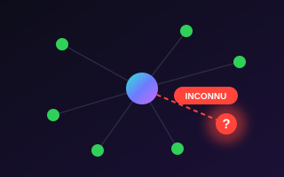

Priorité 1
Un appareil que personne n’a déclaré
Il vient de se brancher, mais il n’est pas dans le référentiel. NetAlertX le repère ; l’administrateur peut ensuite le reconnaître ou le laisser à vérifier dans AURA.
La démarche
AURA rapproche les observations du réseau filaire et du Wi-Fi pour aider l’administrateur à comprendre ce qui se passe — sans rien installer sur les postes.
Un appareil de plus, une borne inattendue… Voici quatre situations qui méritent l’attention d’un administrateur. Les scènes ci-dessous sont des illustrations, pas les observations d’un réseau réel.

Il vient de se brancher, mais il n’est pas dans le référentiel. NetAlertX le repère ; l’administrateur peut ensuite le reconnaître ou le laisser à vérifier dans AURA.

La sonde observe une borne non déclarée dans les locaux. Retrouver le port de switch auquel elle serait reliée reste un objectif : cette localisation n’est pas encore disponible.

Un poste quitte le réseau au moment où une nouvelle borne apparaît. AURA rapproche ces indices pour attirer l’attention de l’administrateur, sans en faire une preuve.

Plusieurs adresses MAC arrivent derrière un même port. Cette règle dépend de la lecture SNMP ; nous la testons pour l’instant uniquement avec des données simulées.
AURA observe en continu et sans agent. Il ne lit aucun contenu : il regarde ce qui apparaît, ce qui émet et ce qui change, puis prévient quand quelque chose mérite un coup d’œil.
Tout équipement qui se branche sur le réseau est repéré et comparé au référentiel.
La sonde recense les SSID, les bornes et les clients autour d’elle, en écoute seule.
Un poste qui disparaît pendant qu’une borne apparaît : AURA rapproche ces indices.
Un appareil vu la nuit, une MAC jamais déclarée : les écarts remontent pour vérification.
Portée actuelle : écoute Wi-Fi en 2,4 GHz uniquement, et localisation précise sur le port de switch encore à venir. Les alertes restent « probables » : c’est l’administrateur qui tranche.
AURA n’est pas un bloc unique : c’est un petit nombre de modules qui se complètent. Certains fonctionnent déjà, d’autres sont des objectifs que nous annonçons clairement.
Un Raspberry Pi avec un dongle en mode monitor écoute les trames de gestion via Kismet, en 2,4 GHz. AURA lit son API REST.
En placeNetAlertX recense les appareils du réseau filaire (ARP, DHCP, SNMP) et garde leur historique. Nous nous appuyons dessus, sans le réécrire.
En placeChaque appareil est comparé à un référentiel, avec un mode apprentissage pour distinguer ce qui est habituel de ce qui l’est moins.
En coursUn moteur de règles rapproche un événement Wi-Fi et un événement réseau proches dans le temps pour signaler une situation probable.
En coursLire la table MAC d’un switch en SNMP pour retrouver le port physique d’un appareil. Nous nous inspirons de Netdisco.
Objectif à venirUne IA reformule l’alerte en langage clair ; la gravité, elle, est calculée par les règles. Notifications par mail et Telegram.
En coursLe plus simple pour comprendre AURA, c’est de le voir à l’œuvre sur un tableau de bord simulé.